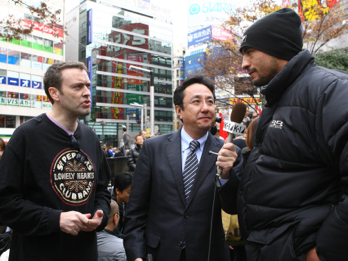

自己紹介
ラッセル・グドール(Russell Goodall)
翻訳･通訳･ビデオ制作・日本語ナレーターとして活動中。
ニュージーランド生まれ、北海道育ち！
両親はニュージーランド人のバイリンガル。
現在は日本人の妻と二人の息子と共に横浜市に在住。
「メッセージを相手にきちんと伝える」事の大事さ(通訳の神髄)を
改めて実感し、「味のある通訳」を心がけています！

日本の文化にどっぷりつかりながらも、家庭ではニュージーランド人である親の観点から躾を受け、育つ。親とは英語、兄弟や日本人の友達とは日本語という貴重なバイリンガル生活を体験。 大学は「授業料がめちゃくちゃ安い」という理由だけで母国ニュージーランドの大学へと進学するが、ここで本格的に英語のむずかしさを知りながら、英語力に磨きをかける。
80年代終わりから90年代頭まで深夜の情報番組などのディレクターで活躍。 そんな中、俗世間についていろいろと学んでいくが、仕事に追われ最終電車にゆられる毎日に「俺は何やってんの？もっと人間的な生活がしたい」との思いから、やがて環境の変化を選択し、結婚して母国ニュージーランドへ。「英語が話せないで困ってる日本人」に救いの手を！という思い？で翻訳･通訳･ビデオ制作・日本語ナレーターなどで生計を立てる。
翻訳･通訳としては、2001年までにビジネス・行政・法律の翻訳や、日本人教会内での説教の定期的な通訳、ニュージーランド首相や森元首相の通訳など様々なエリアを経験する。 自身も日本人と結婚したラッセルは、国際カップルの友人が多い。ニュージーランドにいるころからこうした友人の結婚式で英語・日本語両方でMCを行い、そんなところでも才能を発揮。
▼ニュージーランドでの活動
1999年に世界初の「男はつらいよ」の英語劇がオークランドで上演され、ラッセルは制作全般に関わった他に、なんと主役の寅さん役を演じた。この舞台劇は「男はつらいよ」の映画第1作を舞台化したもので、台詞は90％以上が英語、但し寅さんの啖呵売や口上などは日本語というもので、ラッセルのバイリンガルの才能とキャラクターに目をつけた演出家がラッセルを起用した。山田洋二監督の激励もうけた、ユニークなものとなり、地元ニュージーランドのメディアでも一部とりあげられた。
▼日本での活動
2001年10月渋谷の街頭テレビ局「シブヤテレビジョン」の開局に際し活動の場を数年ぶりに日本に移す。シブヤテレビジョンではプロデューサーとして、また時には番組のナレーターや通訳としても活動。
2001年12月中野サンプラザで行われた第2回ゴスペルクワイヤーフェスティバルでは司会を努める。主催者兼ゲストであるゴスペルシンガー小坂忠の友人であり、クリスチャンでもあるラッセルはこのゴスペルの祭典に喜んで手助けをした。
2005年5月シブヤテレビジョン退社後、フリーとなる